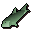

Fishing spot
| Config name | 0_44_52_freshfish |
| NPC id | 318 |
| Combat level | hidden |
| Options | Lure, Bait |
| Category | freshfish |
| Wander range | does not move |
| Movement | nomove |
| Defined in | scripts/skill_fishing/configs/fishing.npc |
Fishing spot
I can see fish swimming in the water.
Show all 4 spawns on the world map → Open in knowledge graph →
Locations
| Area | Coordinates | Level | Count | Map |
|---|---|---|---|---|
| Dark Wizards' Tower | 2840, 3356 | 0 | 1 | view |
| Dark Wizards' Tower | 2842, 3359 | 0 | 1 | view |
| Dark Wizards' Tower | 2845, 3356 | 0 | 1 | view |
| Dark Wizards' Tower | 2849, 3361 | 0 | 1 | view |
Fishing
| Fish | Level | Tool | Bait | XP |
|---|---|---|---|---|
| 20 | 50.0 | |||
 Raw pike | 25 | 60.0 | ||
| 30 | 70.0 |
Dialogue
You need at least 20 Fishing to lure these fish.
You need at least 25 Fishing to bait these fish.